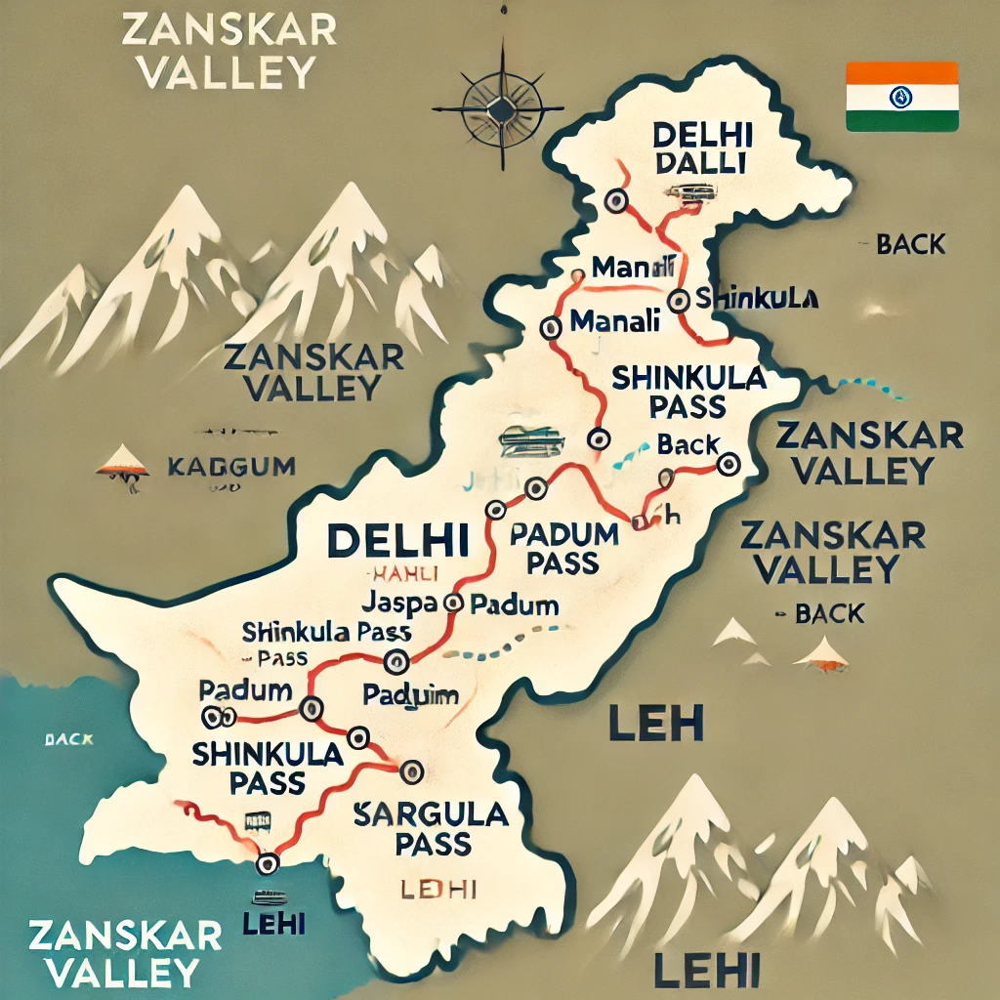

Zanskar Valley

Zanskar Valley: A Hidden Paradise in the Himalayas located in the remote corners of Ladakh, It is a breathtaking destination known for its rugged mountains, pristine rivers, and ancient monasteries. Located at an altitude of over 12,000 feet, this valley is a paradise for adventure seekers, trekkers, and nature lovers. In winter, Zanskar transforms into a frozen wonderland, famous for the Chadar Trek, where travelers walk over the frozen Zanskar River. In summer, the valley blooms with stunning landscapes, offering opportunities for trekking, rafting, and exploring charming villages. With its untouched beauty and peaceful atmosphere, It is a must-visit for those looking to experience the raw and mystical charm of the Himalayas.
Destinations To Explore

Sissu Lake and Waterfall

Atal Tunnel

Lahaul Valley

Shinkhula Top

Gombo Rangjum Mountain

Phutgal Monestry

Padum
Sissu Waterfall: A Hidden Himalayan Gem
Nestled in the breathtaking Lahaul Valley of Himachal Pradesh, It is a mesmerizing natural wonder that captivates travelers with its sheer beauty and serenity. Also known as Palden Lhamo Dhara, this stunning waterfall cascades down from towering cliffs, creating a spectacular sight against the backdrop of the mighty Himalayas.
Sissu Lake is a tranquil high-altitude lake that mesmerizes visitors with its crystal-clear waters and breathtaking Himalayan backdrop. Located near Sissu village on the Manali-Leh Highway, this lake is a must-visit destination for travelers heading toward Ladakh or Zanskar Valley.
Atal Tunnel: A Gateway to the Majestic Himalayas
The Atal Tunnel, an engineering marvel at 10,000 feet, is the world’s longest highway tunnel above this altitude, stretching 9.02 km beneath the Himalayas. Connecting Manali to Lahaul-Spiti Valley, it reduces travel distance by 46 km and cuts travel time by 4-5 hours providing year-round access to Lahaul previously cut off during winters. This tunnel not only serves as a key gateway to Zanskar Valley and other Himalayan destinations but also offers a breathtaking drive with stunning views of snow-capped peaks. Open year-round, the Atal Tunnel has transformed the region into an adventure hub, making it a must visit for travelers exploring the Indian Himalayas.
Lahaul Valley: Where Beauty, Culture, and Adventure Unite
Lahaul Valley, nestled in the remote reaches of Himachal Pradesh, is a hidden gem known for its raw natural beauty and rich cultural heritage. Separated from the rest of the region by towering mountains, Lahaul is most famous for the Atal Tunnel, a remarkable feat of engineering that connects it to Manali year-round, making it accessible even during the harsh winter months. The valley's rugged terrains, glacial rivers, and picturesque alpine lakes create an awe-inspiring landscape perfect for trekkers and photographers. Lahaul is home to ancient monasteries, vibrant Tibetan influences, and traditional Himalayan villages, giving visitors a glimpse into the unique Buddhist culture that thrives in the area. With opportunities for adventure sports like trekking, mountain biking, and wildlife exploration, Lahaul Valley offers an unforgettable experience for those seeking both serenity and excitement in the heart of the Indian Himalayas.
Shinkhula Top: The Majestic Himalayan Pass
It is one of the highest and most challenging mountain passes in the Lahaul Valley of Himachal Pradesh, located at an altitude of 16,500 feet (5,029 meters). This remote and rugged pass connects the Lahaul Valley to Zanskar Valley in Ladakh, offering stunning panoramic views of the surrounding snow-capped peaks and pristine valleys. The ideal time to trek to Shinkhula Pass is during the summer months from June to September, when the snow has melted, and the trails are more accessible. Winter treks are possible for the most experienced trekkers, but they are incredibly challenging due to heavy snow. The trek to Shinkhula involves challenging altitude gain, rough trails, and unpredictable weather conditions, making it a true adventure for those seeking to explore the heart of the Himalayas.
Gombo Rangjum Mountain
Gombo Rangjum Mountain, standing at 6,240 meters in the Lahaul Valley, is a remote and challenging peak located in the Zanskar Range of the Himalayas. Known for its rugged ascent, this mountain attracts experienced mountaineers and trekkers seeking a thrilling adventure off the beaten path. The peak offers breathtaking panoramic views of surrounding snow-capped mountains, valleys, and the pristine landscape below. Key attractions in the area include the stunning Zanskar Valley, known for its dramatic landscapes, and the remote Tindi and Darcha villages, which serve as trekking bases. Visitors can also explore the Phugtal Monastery, perched high on a cliff in the Zanskar Valley, adding a spiritual touch to the adventure. Travelers visit Gombo Rangjum Mountain not only to challenge themselves with its technical climbs but also to experience the untouched beauty and peace of the Himalayan wilderness, far from the crowds of more popular destinations. The region is rich in high-altitude flora and fauna, including rare species like the snow leopard and Himalayan ibex, making it an unforgettable journey for nature enthusiasts and adventure seekers alike. The journey to the peak also offers star-casting views, where trekkers can witness crystal-clear skies and stunning night skies filled with stars, making it a truly magical experience for those who seek tranquility under the Himalayan stars.
Purney: A Tranquil Tibetan Village in the Heart of Zanskar
Purney Village, located in the remote Zanskar Valley, is a peaceful and picturesque village known for its stunning landscapes and traditional Tibetan Buddhist culture. Situated at a high altitude, this village is surrounded by towering snow-capped peaks, lush valleys, and gushing rivers, offering a serene atmosphere and breathtaking views. Purney is home to several ancient monasteries and traditional stone houses, reflecting the rich cultural heritage of the region. The village is accessible via trekking routes from Padum and serves as a tranquil stop for those exploring the rugged beauty of Zanskar Valley. Its isolation and pristine environment make it a perfect destination for travelers seeking peace, natural beauty, and cultural immersion.
Phugtal Monestry : Where Adventure Meets Spirituality
Phugtal Monastery, located in the remote Zanskar Valley of Ladakh, is one of the most unique and stunning monasteries in the region, perched high on a cliff and built in a cave-like structure. With its whitewashed walls and traditional Tibetan architecture blending seamlessly into the rugged landscape, it is one of the most revered Buddhist sites in Zanskar and is associated with the Gelugpa school of Tibetan Buddhism. Founded by Phugtal Rinpoche in the 12th century, it has become an important center for meditation and monastic life. The monastery is accessible only by foot, making the trek to Phugtal a thrilling adventure that takes several days from Padum, offering picturesque views of the Zanskar River and surrounding valleys. It is not only a place of religious significance but also a center of learning, where monks engage in religious studies and meditation. The complex includes prayer rooms, living quarters, and a manuscript library, all nestled into the cliffside, making it an architectural marvel. The peaceful surroundings, breathtaking views, and rich spiritual history of Phugtal Monastery make it a must-visit for those exploring the spiritual heart of Zanskar.
Padum and Tibetan Villges
Padum is the main town in Zanskar Valley, serves as the administrative and cultural heart of the region, surrounded by snow-capped peaks, rivers, and valleys. At an altitude of about 3,600 meters, it is a gateway for trekkers heading to famous destinations like Phugtal Monastery. The town is known for its Buddhist monasteries, traditional Tibetan architecture, and vibrant local life, with markets offering Zanskari handicrafts and Tibetan goods. The nearby Tibetan villages, such as Zangla, Purney, and Nirang, are characterized by stone houses, monasteries, and prayer flags, and offer a glimpse into the spiritual and cultural practices of the locals. These villages maintain ancient traditions and are deeply influenced by Tibetan Buddhism. With their tranquil atmosphere, stunning landscapes, and cultural richness, these villages provide a perfect setting for those seeking spiritual solace and a deeper understanding of the region’s heritage.
Manali: Your Gateway to Himalayan Adventures
Manali is a popular hill station in Himachal Pradesh's Kullu Valley, is known for its stunning natural beauty, adventure activities, and vibrant culture. Surrounded by snow-capped peaks, lush valleys, and the Beas River, it offers a perfect blend of relaxation and adventure. Visitors can explore attractions like the Hadimba Temple, Manu Temple, and Solang Valley, which is famous for paragliding, skiing, and trekking. Rohtang Pass, a short distance from the town, provides breathtaking views of the Himalayas. The town is also a hub for adventure tourism, offering activities like river rafting, mountain biking, and trekking. In winter, Manali transforms into a snow-covered paradise, making it a popular destination for skiing and snowboarding. Additionally, it serves as a gateway to remote regions like Leh-Ladakh and Spiti Valley, attracting trekkers and backpackers seeking offbeat adventures.

Zanskar Valley Itinerary
Here’s a typical itinerary for exploring Zanskar, starting and ending in Delhi.
Day 1 | : Hometown to Delhi via train (as per your package)
---------|----------------------------------------------------------------------------------------
Day 2 | : Reach Delhi & overnight journey from Delhi to Manali
---------|----------------------------------------------------------------------------------------
Day 3 | : Reach & Manali to Sissu/Jispa (90 km/3 hours)
---------|----------------------------------------------------------------------------------------
Day 4 | : Sissu to Purne Via Mount Gonbo Rangjan & Darcha
---------|----------------------------------------------------------------------------------------
Day 5 | : Purne – phugtal monastery – Padum (treak approx 3 hour)
---------|----------------------------------------------------------------------------------------
Day 6 | : Padum Local(50 km/2 Hours) (A whole day for padum local)
---------|----------------------------------------------------------------------------------------
Day 7 | : Padum to Gombo (190 km/ 5 Hours)
---------|----------------------------------------------------------------------------------------
Day 8 | : Gombo to Sissu/Manali & Start journey towards Delhi (105km/ 4 Hour)
---------|----------------------------------------------------------------------------------------
Day 9 | : Reach Delhi & departure towards your hometown.
Best time to visit Zanskar Valley
The best time to visit Zanskar Valley is during the summer months from June to September. During this period, the weather is relatively mild, and most of the roads, including the Atal Tunnel, are accessible, allowing easy travel to the valley. The trekking routes and scenic spots like Sissu Lake, Shinkhula Pass, and Padum are open, offering breathtaking views of the valley's snow-capped peaks, rivers, and monasteries.
- June to August: Ideal for trekking and outdoor activities, as the weather is warm enough for comfortable exploration.
- September: The end of the tourist season with beautiful autumn colors and cooler temperatures, still good for trekking.
- May: A peaceful time to visit, just before the peak season. The valley begins to thaw, offering early access to trekking routes and scenic spots. The cool weather, snow-capped peaks, and blooming spring flora make for a serene experience, with fewer crowds and a fresh, untouched atmosphere.
Avoid visiting during the winter months (November to March) when heavy snow and extreme cold make most routes inaccessible and challenging, though the valley's winter scenery is stunning for those seeking solitude and adventure.